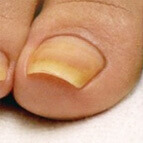
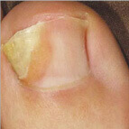
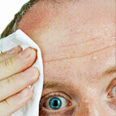
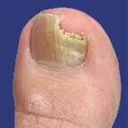
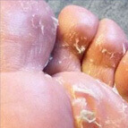
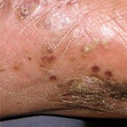
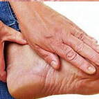
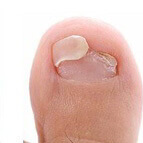

DACĂ AȚI OBSERVAT ACESTE SIMPTOME,ÎNSEAMNĂ CĂ BOALA A AJUNS LA NIVELUL CRITIC!
 S-a schimbat culoarea plăcii unghiei
 S-a schimbat forma unghiei
 Miros neplăcut și hiperhidroză
 Desprinderea și fărâmițarea unghiei
 Durere, usturare, mâncărime și exfolierea pielii
 Răni purulente pe tălpi
 Durere și disconfort în timpul mersului
 Pierderea unghiei